Shutterhaus Visuals · portfolio · proposal
Two additions. The 3×2 column layout is already live.
Both are things the stylesheet already knows how to draw — the code is in
editorial.css, no markup emits it. Real gallery photographs, real
crop, no cropping applied.
Now live · b455a40
50 photographs · Gauteng
Portfolio
Portraits, couples, families and everything in between. This is the work, unfiltered.
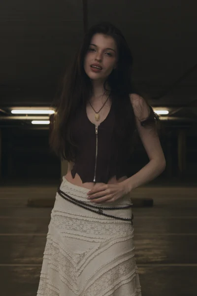
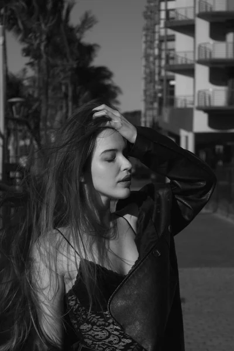
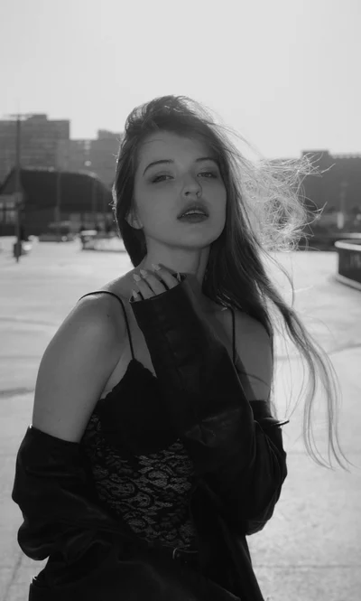
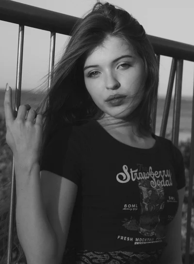
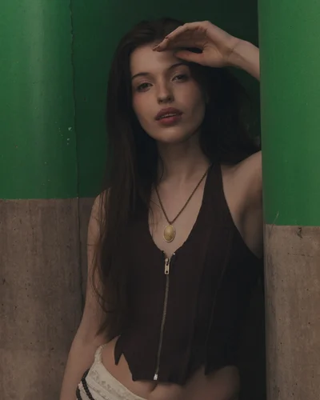
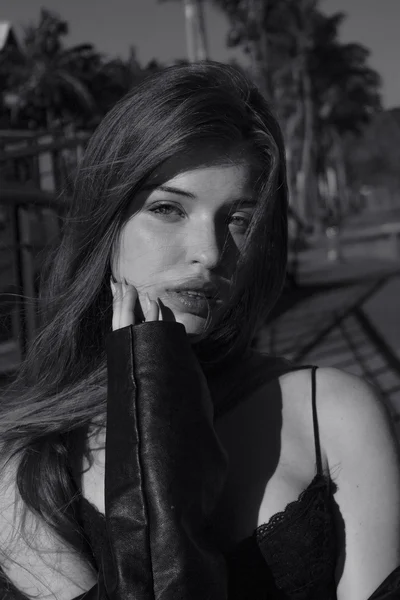
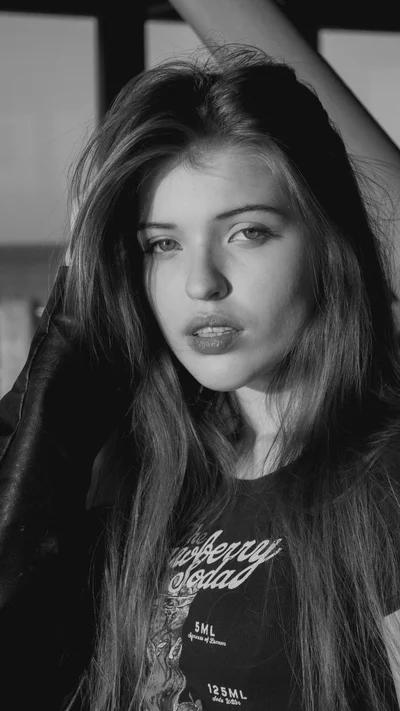
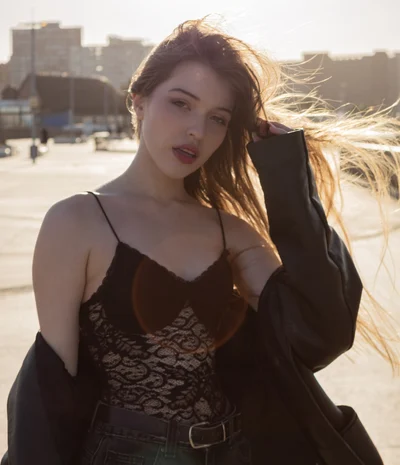
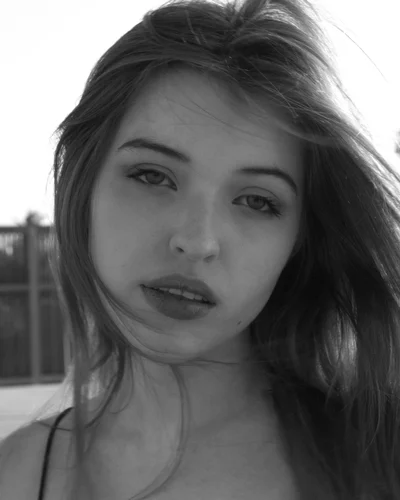
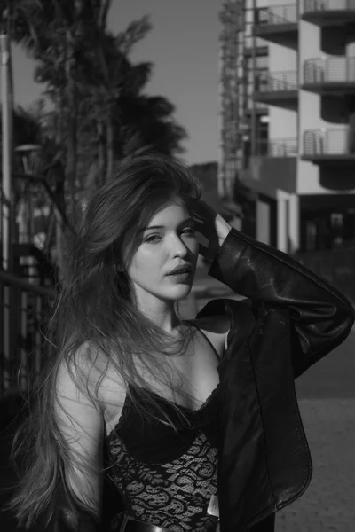
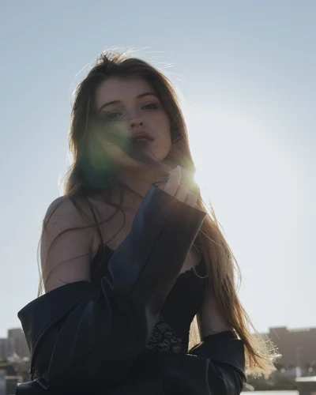
What it costs you
- 11,395px tall. Roughly 14 screens of scrolling before the price band. A visitor who wants “couples” has no way to skip to them.
- All 50 frames identical in the eyes of a search engine. Every one is
alt="Portrait, natural light" and album: "photo".
- No sense of range. You shoot portraits, couples, families and social content; the page says so, then shows 50 undifferentiated frames.
Proposed not built
50 photographs · Gauteng
Portfolio
Portraits, couples, families and everything in between.
All 50
Portraits 28
Couples 9
Families 7
Social 6
What it changes
- Filter bar, styled from CSS that already ships.
.pfilter and .pfilter__item are in editorial.css today with no markup using them — roughly 40 lines waiting for this.
- Sticky, so it survives the scroll. 14 screens is too many to come back up for. The bar is the only thing between the visitor and the photos.
- “Unfiltered” comes out of the subhead. It is a nice line, but it argues against the thing you are about to do.
- Real alt text per photo. A one-line job in the admin, and it is the difference between 50 identical images to Google and 50 described ones.